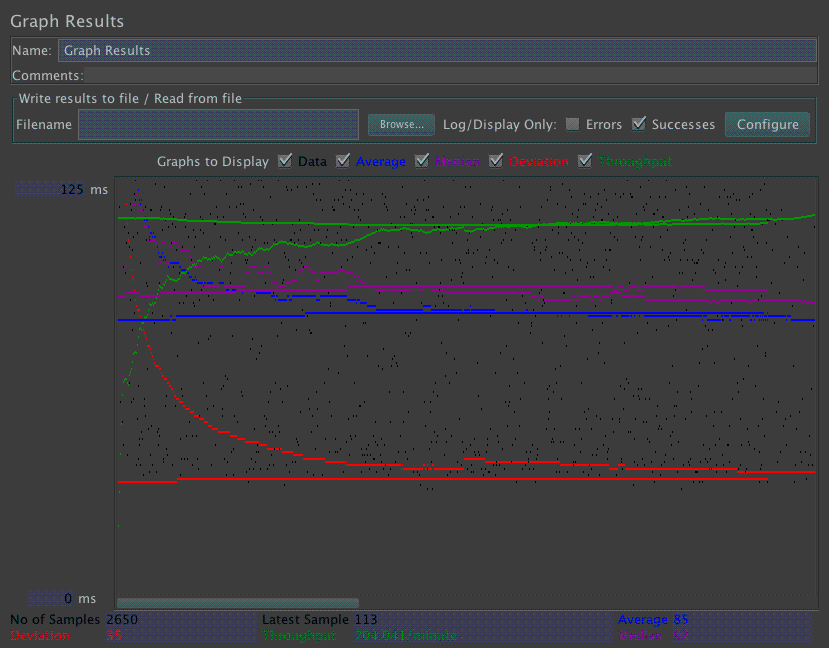
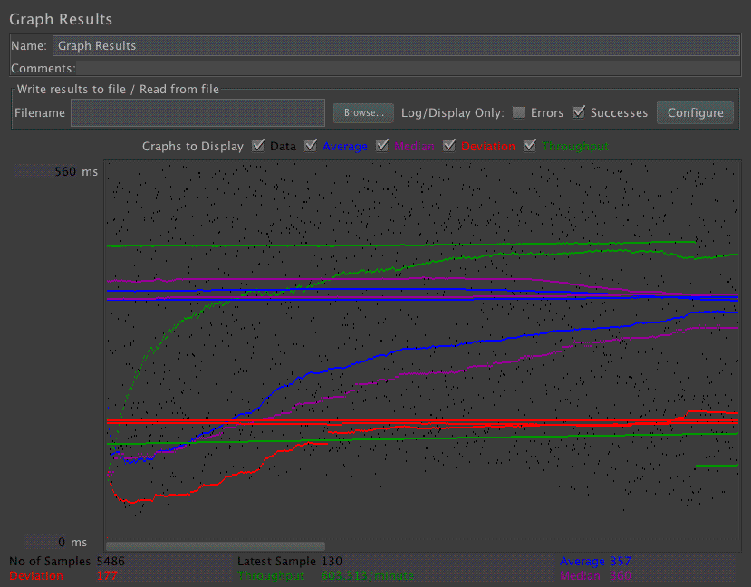
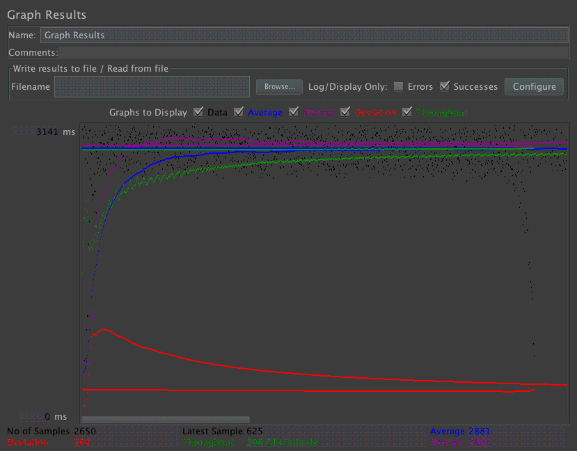
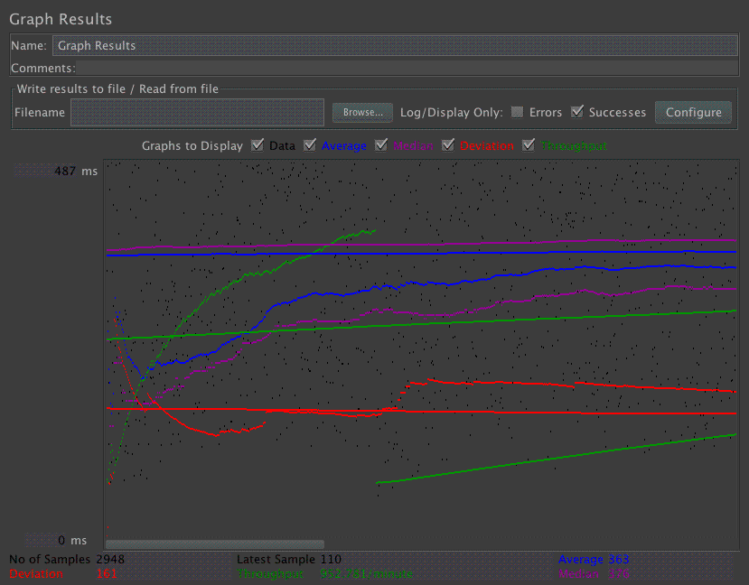
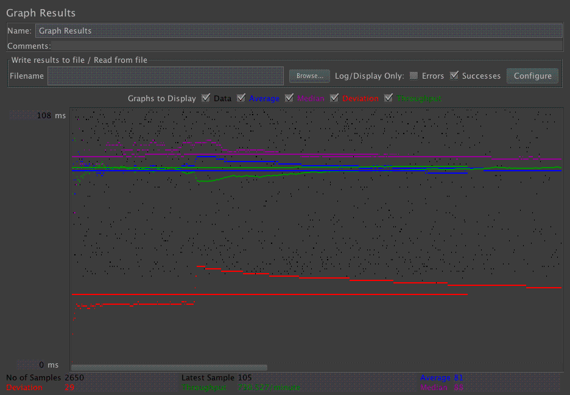
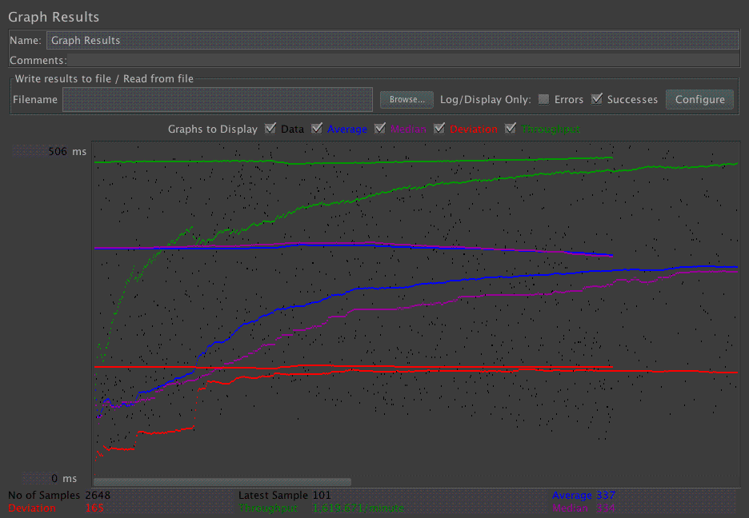

| Single-instance version cases |
Graph Results Screenshot |
Average Query Time(ms) |
Average Search Servlet Time(ms) |
Average JDBC Time(ms) |
Analysis |
| Case 1: HTTP/1 thread |
 |
85 |
52 |
21 |
Log file: test_single_3.txt
With only 1 thread(user), it is very fast to retrive the result because it can reuse the prepared statement again and again and have the pooling
to improve the performance.
|
| Case 2: HTTP/10 threads |
 |
358 |
316 |
183 |
Log file: test_single_4.txt
It is comparatively slower than having only 1 thread. Because here we have 10 users and we have more statements.
|
| Case 3: HTTPS/10 threads |
 |
357 |
302 |
176 |
Log file: test_single_5.txt
The reason HTTPS is faster, even though HTTPS takes more time due to encryption. However, since there are more website using HTTP, so the waiting/queuing time is longer, on the other hand, the queuing time for HTTPS overall is shorter. Which results in HTTPS faster.
|
| Case 4: HTTP/10 threads/No prepared statements |
 |
2881 |
2826 |
2683 |
Log file: test_single_1.txt
Without the prepared statement, it takes a very long time to finish the request and return the response. This shows the advantage of
using prepared statement |
| Case 5: HTTP/10 threads/No connection pooling |
 |
363 |
312 |
198 |
Log file: test_single_2.txt
Compare to HTTP/10 thread with connection pooling, this one is slightly slower. Because with pooling, we can reuse the connections as long as they are avilable. Without pooling, we have to re-establish the connection for every query.
|
| Scaled version cases |
Graph Results Screenshot |
Average Query Time(ms) |
Average Search Servlet Time(ms) |
Average JDBC Time(ms) |
Analysis |
| Case 1: HTTP/1 thread |
 |
81 |
49 |
21 |
Log file: test_scale_3.txt
Becasue we only have one thread. So result should be very similar to the single-instance version. Because we need at lease two thread to be able to see the difference.
|
| Case 2: HTTP/10 threads |
 |
340 |
292 |
171 |
Log file: test_scale_4.txt
This one is a faster than the single-instance one, but won't be as low to half of the time, because there are overhead of redirecting and sometime also using the same instance due the sticky session. But the overall time is faster, means it deos successfully balance the load.
|
| Case 3: HTTP/10 threads/No prepared statements |
 |
2857 |
2716 |
2605 |
Log file: test_scale_1.txt
No prepared statements dramtically slows down the process. But still much faster than the single-instance!!
|
| Case 4: HTTP/10 threads/No connection pooling |
 |
330 |
286 |
187 |
Log file: test_scale_2.txt
Since there is no connection pooling, so it's a liitle bit slower than case 2. But still much faster than the no prepared statments one, since we dont have to open the connection and close them over and over again.
|